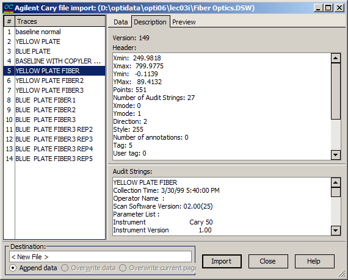
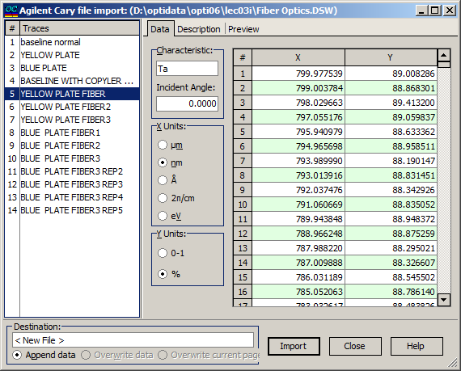
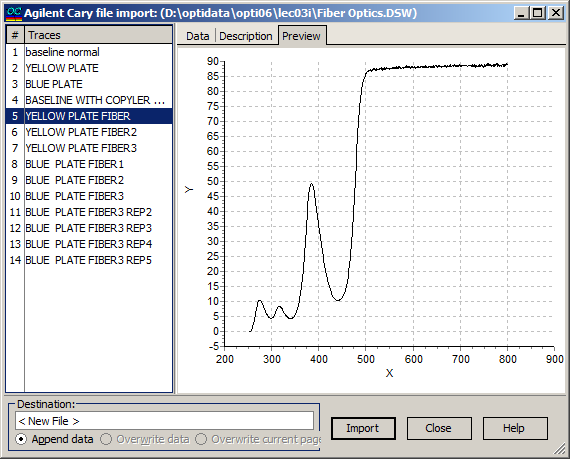

Agilent Cary options
The Agilent Cary Spectrophotometers import options dialog box displays data extracted from Agilent Cary binary files, which is ready for import into the target file. Typically, Agilent Cary files contain multiple “traces.” The list of available traces is shown on the left side of the dialog window. By selecting different traces, users can view the corresponding information, including:

On the Data page, information corresponding to the selected trace is presented in digital form. Users can specify relevant characteristics, including the incident angle and measurement units, which will be utilized during the transfer of data to the measurement file.

On the Description page, users can find the header and audit information related to the selected data or trace.

The Preview page allows you to observe the data in graphical form.
In the Destination field, the name of the data file being edited and the destination page are indicated. It is possible to append data, overwrite data in the existing file, or overwrite only the current page. It is also possible to change the destination to any of the opened Measurement editors or to create a new one.
When the Import button is pressed, the content of the current trace will be transferred to the selected Measurement file.